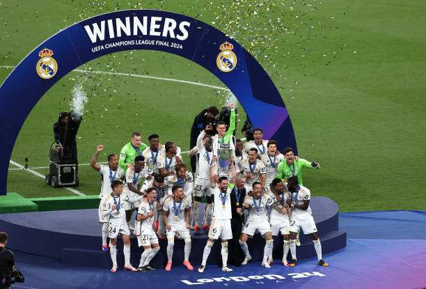

history of Real Madrid
Guardian ...(Show more) Real Madrid, Spanish professional football (soccer) club based in Madrid. Known for their all-white uniforms, which led to its nickname “Los Blancos,” Real Madrid is one of the world’s best-known teams. Real Madrid grew out of Football Club Sky, a team formed in Madrid in 1897. The club was officially founded in 1902 and joined the Royal Spanish Football Federation in 1909. Real Madrid played at a variety of venues until ambitious club president Santiago Bernabéu spearheaded the construction of the stadium that bears his name. Opened in 1947, the Bernabéu holds more than 80,000 spectators and was the venue for the 1982 Fédération Internationale de Football Association (FIFA) World Cup final. Alfredo Di StéfanoAlfredo Di Stéfano, one of Real Madrid's greatest players, handling the ball in a match at Caracas, Venezuela, in August 1963. The European Cup was first held during the 1955–56 season, with a prestigious field consisting of clubs that had won their own country’s league championship. Real Madrid was the tournament’s first winner, defeating French club Stade de Reims in the final. It continued on a run of European dominance that no team has matched since. Gifted players such as Ferenc Puskás, Alfredo Di Stéfano, Paco Gento, Hector Rial, and Miguel Muñoz helped the club win the first five European Cups in a row. The club’s play in the 1960 European Cup final against the West German team Eintracht Frankfurt—a 7–3 Real victory—is widely considered one of the finest club performances of all time. Real has won a total of 15 European Cup/Champions League titles, far more than any other team. Britannica Quiz Great Moments in Sports Quiz Real Madrid’s European Cup and Champions League titles 1956, 1957, 1958, 1959, 1960, 1966, 1998, 2000, 2002, 2014, 2016, 2017, 2018, 2022, 2024 Real Madrid has won more Spanish top-division (La Liga) championships (36) than any other Spanish side. The club has also won the Copa del Rey, the main Spanish cup competition, 20 times and the Supercopa de España (Spanish Super Cup) 13 times. It won UEFA Cup twice, in 1985 and 1986. Real’s local competition is Atlético Madrid, but the club’s biggest rivalry is with FC Barcelona. The tension between the football clubs from Spain’s two biggest cities was amplified by a struggle between the teams in the 1950s to sign Di Stéfano, who reneged on a proposed deal with Barcelona to sign with Madrid, helping Real become a football power in the 1950s and ’60s. Matches between Barcelona and Real Madrid are known as El Clásico (“The Classic”) and are watched throughout Spain, in large part because the two sides symbolize for many the ongoing political and cultural difficulties between Castilian (Real) and Catalonian (Barcelona) Spain. James RodriguezJames Rodriguez playing for Real Madrid at Barcelona, Spain, in October 2014. From the late 1990s Real Madrid spent enormous sums on luring some of the world’s most famous foreign players to the club, where they are known as galácticos (“superstars”). Those players were often the most expensive (by transfer fee) footballers in the world and included such stars as David Beckham, Luis Figo, Ronaldo, Zinedine Zidane, Kaká, Cristiano Ronaldo, and James Rodriguez. Sergio Ramos and Iker Casillas are other notable players of this era. Vinícius Júnior, the FIFA Men’s Player of the Year for 2024, joined Real Madrid in September 2018. Years later, following his departure from Paris Saint-Germain after the 2023–24 season, Kylian Mbappé also joined the club. Clive Gifford The Editors of Encyclopaedia Britannica
